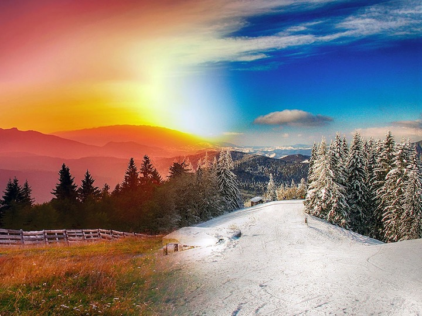

Although summer is one long break, there are many breaks in winter as well. Winter breaks are better because they are more spread out so you appreciate them more. Also, my brthday is in winter. In additon, if you want to go swimming, pools are never crowded because its so cold. This makes it more Covid safe!!!! Its also fun to get a whole pool to yourslef. Swimming at night is the best because you can see the stars and there is absolutely no one crazy enough to be there in the cold at that hour! You can also watch the sunset as your drive to a pool! Yay! Nigh swim! You can also ski in winter.
